WEBSITE LESSON 11 · LECTURE 10 · CHAPTER 6-2
SN2底物效应、SN1机理与重排
Leaving groups, substitution kinetics, stereochemistry and carbocation rearrangements
一、知识体系：从反应条件读出机理
上一课建立了SN2的一步协同、二级速率和背面进攻。本课先补全“底物为什么快或慢”，再引入经过碳正离子的SN1，最后把动力学、立体化学和重排连成同一条证据链。
| 要判断的问题 | SN2路径 | SN1路径 |
|---|---|---|
| 控速过程 | 亲核体进攻与离去同步 | 简单模型中电离形成碳正离子控速 |
| 影响底物的主要因素 | 背面通道、离去能力与电子效应 | 形成正离子的稳定性、离去能力 |
| 亲核体浓度 | 通常进入速率式 | 通常不进入电离控速的简单速率式 |
| 立体化学 | 反应中心几何构型翻转 | 平面化后两面进攻，可不完全消旋 |
| 是否重排 | 普通一步SN2无游离正离子重排 | 正离子寿命允许时可与捕获竞争 |
网站编号为第11课，对应课件文件Lecture 10 / Chapter 6-2，共49页。第3–20页补充SN2，第21–44页展开SN1，第45–48页比较，第49页为作业。章标题虽含消除反应，本文件尚未具体讲解E1/E2；这里只提示可能竞争，详细机理留待后续材料。
主要依据：本次上传的49页PPT。页码为幻灯片编号；正文对原文中的结构式、术语和过度概括作显式校正。
二、应试笔记：离去基团的三个角色
离去基团（leaving group）必须随C–LG键断裂，带走该键原有电子对。它不是“电负性最大就最好”：底物极化使碳亲电，但离去后的稳定性、键强度、可极化性和反应介质也影响能垒。
- 提供亲电中心：C–LG键的极化有助于亲核体接近碳，但单看静态δ⁺不能预测全套速率。
- 离去后可稳定存在：同类、可比条件下，较弱碱往往是较好的阴离子离去基团。必须比较实际离去物种，不能只看一个元素符号。
- 在过渡态中稳定部分成键与电荷分布：较易极化的基团可在较长距离仍保持相互作用，降低能垒。
| 物种或底物 | 常见判断 | 必须带上的条件 |
|---|---|---|
| I⁻、Br⁻、Cl⁻ | 通常是较好的卤离子离去基团 | 普通烷基卤中常见离去能力I>Br>Cl≫F；不能仅按电负性排序 |
| HO⁻、RO⁻、NH₂⁻ | 强碱，通常离去较差 | 直接用卤离子把未活化醇中的OH替掉通常行不通 |
| 质子化醇中的H₂O | 中性水可离去 | 酸性条件会同时质子化强碱性亲核体 |
| 磺酸酯等活化底物 | 可生成共振稳定的离去阴离子 | 需明确底物结构；不能把任何含硫酸根或磷酸根的体系一概归为同样好离去 |
例如R–OH先质子化成为R–OH₂⁺，真正离去的是水，而不是OH⁻。酸活化与亲核体选择必须相容：Br⁻、I⁻碱性弱，在酸中仍可参与；RO⁻会先夺取质子，不能把“加酸活化”和“强碱阴离子亲核体完全保留”同时当作前提。不同级数的醇还可能采用不同取代或脱水路径。
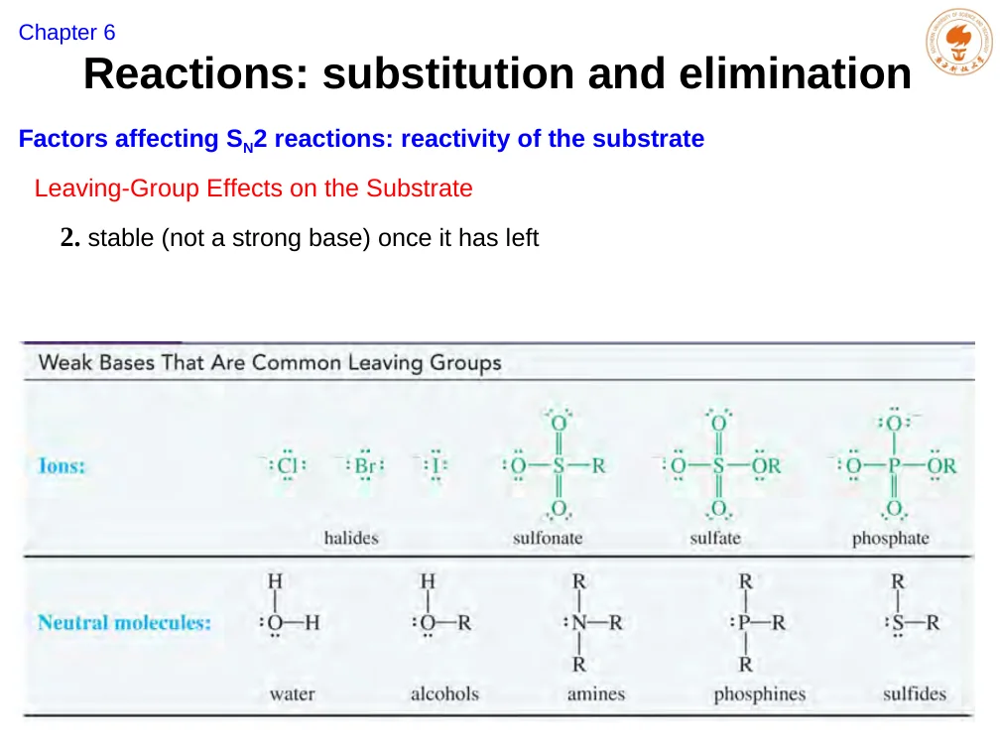
C–F键很强，F⁻较小且难极化，离去特征不等于键的初始极化程度。亲核性也要另看溶剂，不能把“差离去”误写成“任何条件下都不能作亲核体”。
三、SN2底物效应：先看反应中心，再看邻位
对相近离去基团与反应条件，普通饱和烷基底物常见顺序为CH₃X>伯>仲≫叔。位阻主要挡住反应中心背面。SN2要形成Nu···C···LG近似轴向排列，亲核体必须靠到可以与C–LG反键轨道作用的距离。
伯、仲、叔按“连卤碳连接几个碳”分类，不按整个分子有多少个碳或是否带支链。新戊基效应是重要反例：(CH₃)₃C–CH₂Br的反应碳是伯碳，却被相邻叔丁基严重遮挡，SN2极慢。不能把所有伯卤代烷都视为相同。
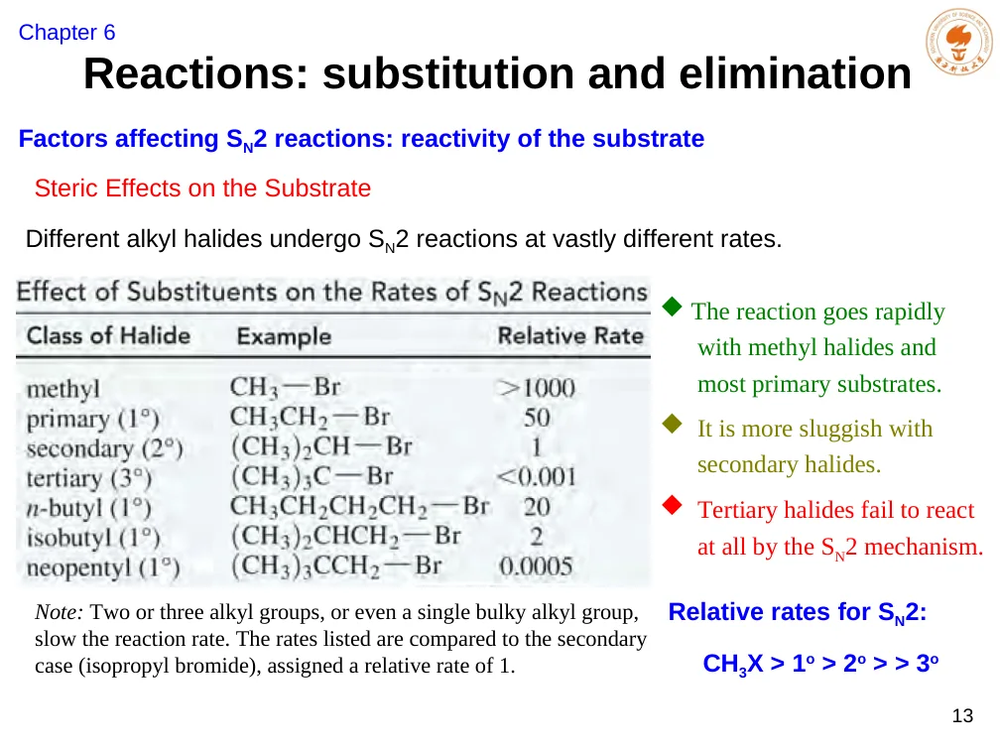
课件第13页的相对速率以异丙基溴为1，是特定比较条件下的数据，不是跨溶剂、温度和亲核体均通用的常数。第14页把新戊基的速度与叔卤相提并论，适合表达“很慢”，不表示新戊基与叔碳底物采用相同机理。
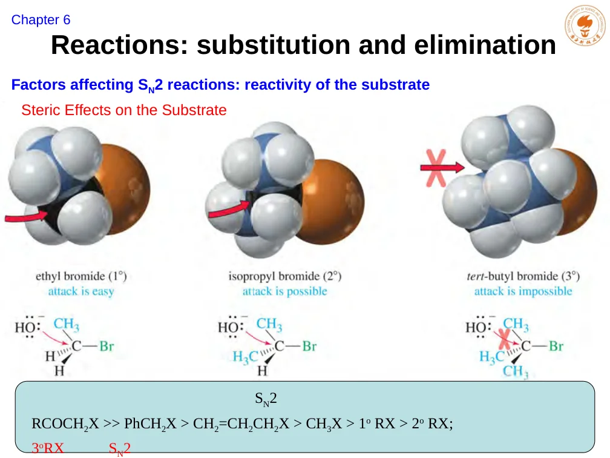
苄基卤Ph–CH₂X和烯丙基卤CH₂=CH–CH₂X的连卤碳仍为sp³，可有利于SN2；它们又可因对应正离子的共振稳定而促进SN1。因而“苄基活泼”不单独证明某一种机理。α-羰基卤化物也常表现较高SN2活性，但涉及邻近电子效应，不能将第16页的一条顺序机械推广到任意底物。
第16页写作CH₂=CH₂CH₂X的烯丙基式存在价态书写错误，规范写为CH₂=CH–CH₂X。它与CH₂=CHX（乙烯基卤）不同。
四、SN2的轨道图像与Walden翻转
亲核体的占据轨道与底物C–LG的σ*反键轨道作用。背面接近可取得合适的轨道重叠；电子进入与断键相关的反键组合，使C–LG减弱，同时形成C–Nu。过渡态同时有两根部分键，不能解释成稳定、能分离的“五根完整键碳中间体”。
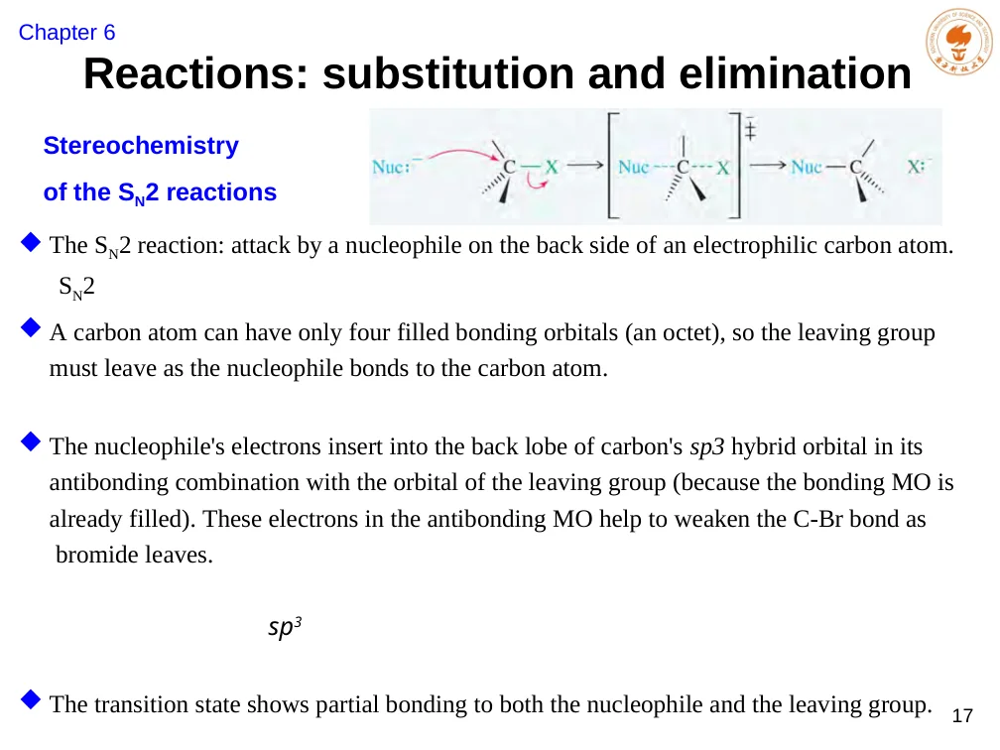
结果是反应中心的Walden翻转（Walden inversion），类似伞面翻转。立体专一性指反应物立体化学通过确定路径约束产物，不等于“任何反应只给一种产物”；SN2也可能在不同位置发生竞争。
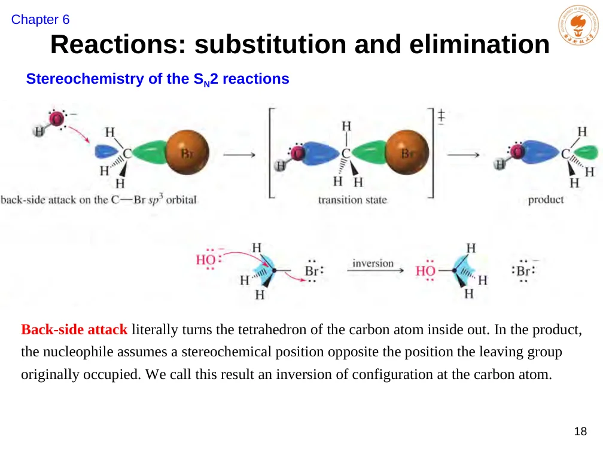
几何翻转≠R/S标签必翻转。反应后应重新排列CIP优先次序。若换上的基团改变排序，即使发生几何翻转，R/S也可能保持相同字母。反应物与换了基团的产物通常不是同一组成，不能笼统叫作一对对映体。
课件第20页：由(R)-2-溴戊烷生成腈
CN⁻经碳端进攻C2，Br⁻离去。产物为CH₃–CH(CN)–CH₂–CH₂–CH₃；命名时腈碳纳入母链，得到2-甲基戊腈。原底物次序Br>丙基>甲基>H；产物次序CN>丙基>甲基>H，因此本例的几何翻转恰好也使R变S。CN取代增加一个碳，不能误写成2-氨基戊烷或仍沿原五碳链忽略腈碳。
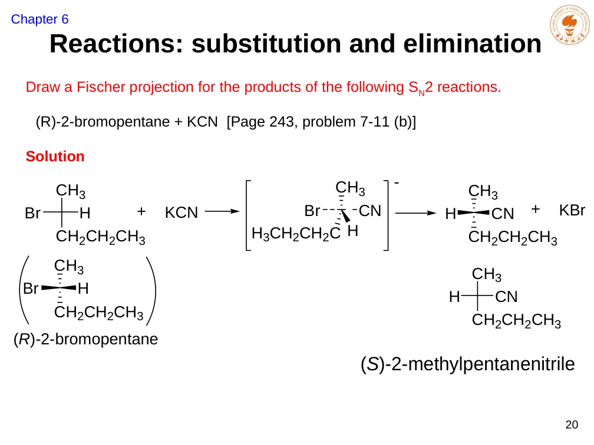
画Fischer产物时，可固定原投影的上下主链，将反应中心横向两基团的相对位置翻转，表示取代中心反转；未反应立体中心的空间关系不应跟着任意交换。最后仍需按新基团的CIP重新核对。
五、SN1与溶剂解：把三步的电荷写清
叔卤代烷背面受阻，普通SN2不利，却可在适合电离的介质中发生取代。课件用叔丁基溴与甲醇生成甲基叔丁基醚说明溶剂解（solvolysis）：溶剂本身参与捕获。这里真正进攻的初始物种是中性CH₃OH，不是预先大量存在的CH₃O⁻。
| 步骤 | 简式 | 电子与电荷 |
|---|---|---|
| ① 电离 | (CH₃)₃C–Br → (CH₃)₃C⁺ + Br⁻ | C–Br异裂，键电子对归Br；简单模型的慢步骤 |
| ② 亲核捕获 | (CH₃)₃C⁺ + CH₃OH → (CH₃)₃C–O⁺(H)CH₃ | O孤对形成C–O键，先生成氧鎓离子 |
| ③ 去质子化 | 质子化醚 + B → 中性醚 + BH⁺ | B可为另一溶剂分子；不是脱去中性H原子 |
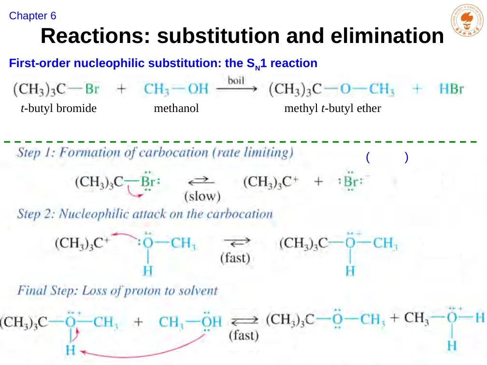
SN1中的“1”指简单机理控速步骤的单分子性，而非整个净反应只涉及一个分子。使用中性亲核体通常要额外去质子化；阴离子亲核体捕获时则不一定有这一步。不要只背“SN1永远两步或三步”的数字。
同样，观察到醚不等于排除消除产物；本课把取代路径画出来，并不表示实际叔卤体系在所有条件下都只有这一种反应。
六、动力学与能量图：速率定律怎样约束机理
v为初速率，通常用mol L⁻¹ s⁻¹；k₁单位为s⁻¹，k₂单位为L mol⁻¹ s⁻¹。在简单电离控速模型中，SN1对底物一级、对亲核体近似零级；SN2对两反应物各一级。它们在“浓度”上的不同，来自哪种物种参与有效控速过程，而不是名字中的数字规定结果。
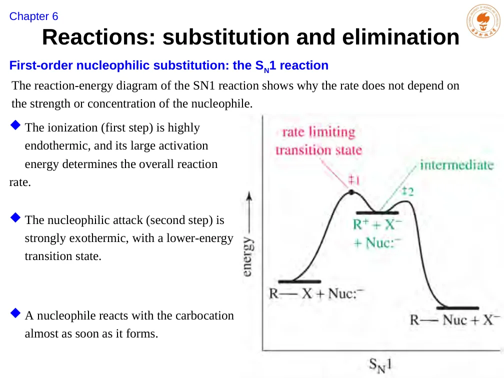
SN1的碳正离子是能量图上的局部最低点，前后由过渡态相连；SN2普通协同步骤没有这样的正离子能谷。亲核捕获通常较快，导致总速率主要由电离控制。但“总图绝对最高点一定控速”并非无条件规则，还要考虑中间体能量、前置平衡、回返和浓度。
恒温、溶剂与离子强度尽量不变，改变一种反应物浓度。底物加倍，两类理想速率都加倍；只有改变亲核体浓度才有区分力。若亲核体就是溶剂，大幅改变其比例也会改变介质电离能力，因此不能把观测速率变化全归于浓度级数。
本式讨论的是典型简化模型。离子对回返、捕获竞争、盐效应或混合机理可使观测行为更复杂；一级动力学支持电离控速，却不是“唯一证明所有细节”。
七、SN1的底物、离去基团与溶剂效应
1. 稳定正在形成的正离子，可降低电离代价
对于可比的普通烷基碳正离子，稳定性通常叔>仲>伯>甲基。烷基诱导给电子和超共轭可分散缺电子特征。电离的吸热步骤常有较产物样的过渡态，借助Hammond假说理解：稳定生成中的正离子，往往也有利于控速过渡态。
这只是普通烷基的趋势；苄基、烯丙基可因共振而例外。课件第30页上方以烯丙基两端离域为例，下方是苄基卤。未取代烯丙基正离子的两个末端等价；苄基正离子的正电荷可离域到邻、对位，不能把“平均分在两个碳”当作所有共振正离子的定义。
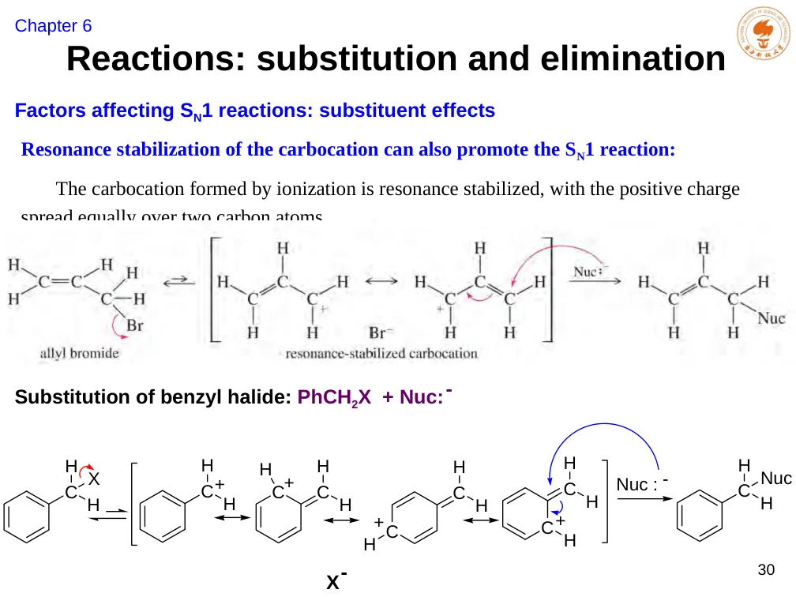
2. 好离去基团对SN1、SN2都重要
SN1慢步直接断开C–LG。较稳定、可极化的离去基团通常有利于电离。叔底物能稳定正离子，不代表可以让任何强碱基团直接离去；未活化OH仍可能需要酸活化或先转为适当衍生物。
3. 电离介质要同时考虑极性、溶剂化和溶解性
较强电离能力的极性介质能稳定形成中的电荷。水或醇等质子溶剂可与阴离子形成氢键，也可用孤对与阳离子相互作用；混合溶剂则还影响底物溶解性。相对介电常数εr是无量纲的介质指标，但不是足以单独预测所有SN1速率的万能常数。
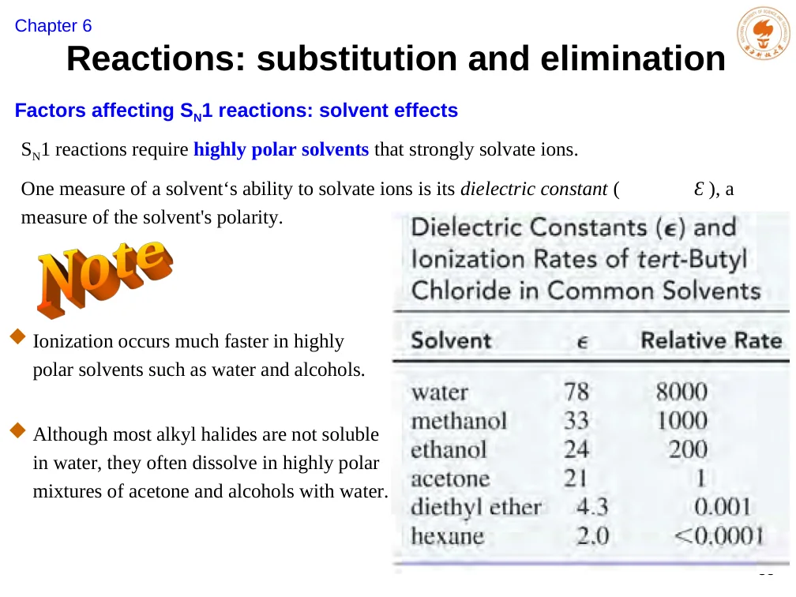
第35页中水、甲醇、乙醇与丙酮的速率差别同时体现溶剂具体相互作用，不能只按介电常数逐格排序。SN2中极性非质子溶剂常减弱阴离子亲核体的氢键束缚；这不等于“完全不溶剂化阴离子”。两类机理对介质的要求必须连同亲核体状态来分析。
4. 乙烯基卤、芳基卤要另行分类
CH₂=CH–X和Ar–X在普通条件下通常不走这里的烷基SN1/SN2：对应正离子难形成，sp²反应中心的键与进攻几何也不同。不能把原因简化为“有π电子就绝对不能发生任何亲核取代”；SNAr、苯炔或金属催化路径属于另外的反应范围。
八、SN1的立体化学：平面化与离子对记忆
理想自由、平面的sp²碳正离子若处于非手性环境，两面可等概率受攻，使一个手性反应中心丢失原有信息。但实际形成的离子对（ion pair）可能尚未充分分离，离去阴离子与溶剂笼部分挡住原先一面，使背面捕获较多。
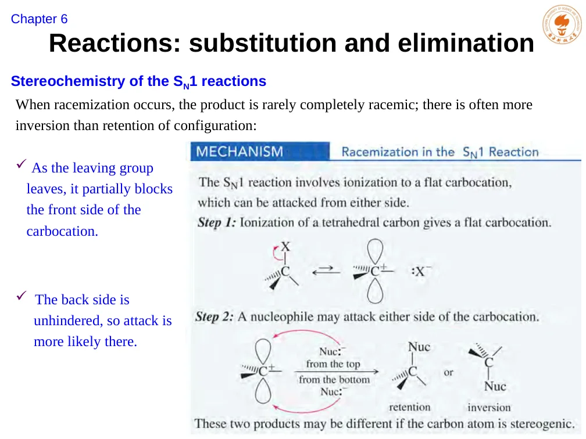
所以常见结果是保持与翻转的混合，可能偏向翻转，而非必定精确50:50。严格说，外消旋化指向等量对映体的过程；观察到两种对映体或光学纯度下降，并不代表已经完全消旋。第36页“whether or not equal ... called racemization”的写法过宽，做定量题须先写明是否假设等概率。
若分子还保留其他手性中心，两面进攻可能产生非对映体，也不应把所有混合物一律叫作消旋体。判断旋光时还要明确比较的是同一产物的对映体、测量条件相同，且可用线性加和近似。
九、重排：迁移的是带成键电子对的基团
碳正离子重排可在亲核捕获前发生，也可能与离去相耦合。最常用的画法是相邻碳上的C–H或C–C键把电子对迁移到正电中心，旧迁移基团所在碳成为新的缺电子中心。它改变连接关系，与共振式仅改变电子分配不同。
1,2-氢迁移（hydride shift）
氢迁移以相邻C–H键的电子对进攻正电中心。“H⁻迁移”是电子记账的说法，不表示在溶液中先生成长期游离的H⁻。课件第40–41页中，先形成仲正离子，相邻碳的氢迁移后形成较稳定的叔正离子，再由水捕获、去质子化形成重排醇。
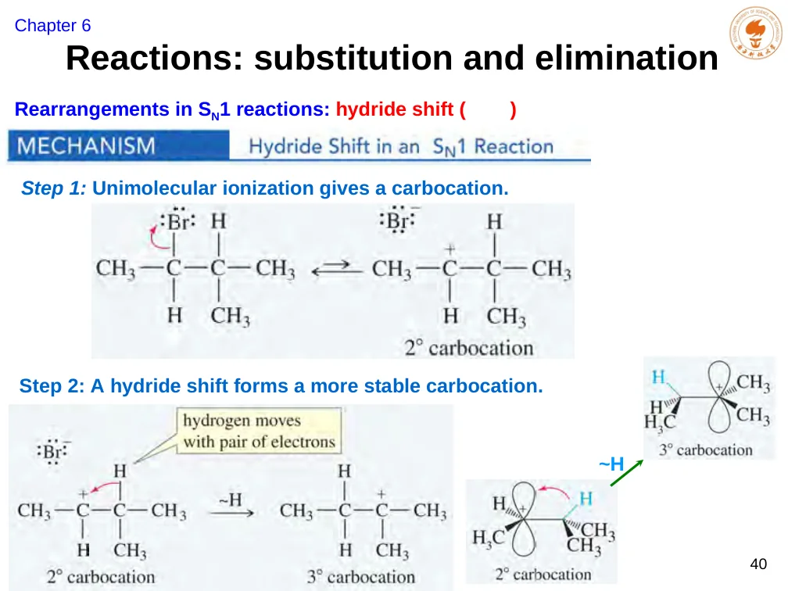
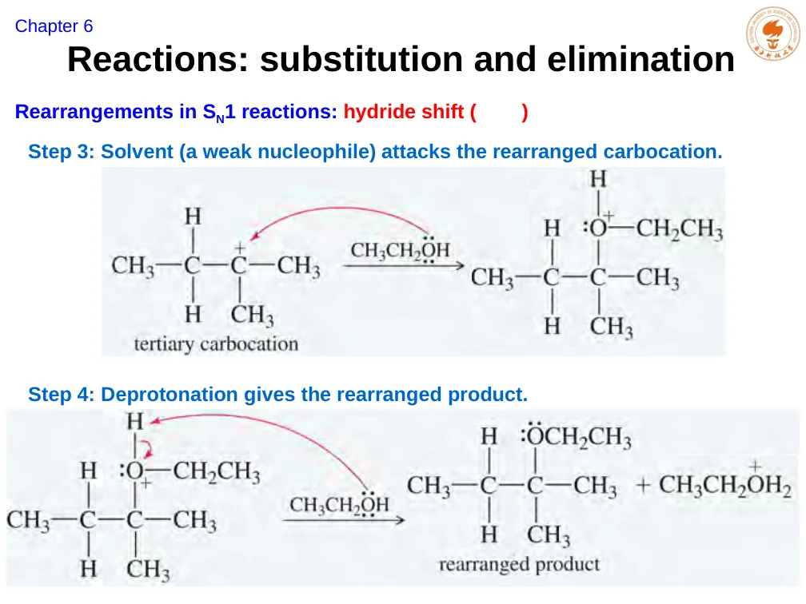
1,2-烷基迁移（alkyl shift）
烷基迁移的电子来源为C–C键。若相邻碳是季碳，不能从该碳画出它并不存在的C–H键；课件第43–44页用甲基迁移形成较稳定的叔正离子，水捕获后得到重排醇。这个新戊基实例可把离去与迁移耦合来画，不能强行假定先积累游离、可观察的伯碳正离子。迁移时只画“CH₃移动”而不标电子箭头和新正电位置，会漏掉机理核心。
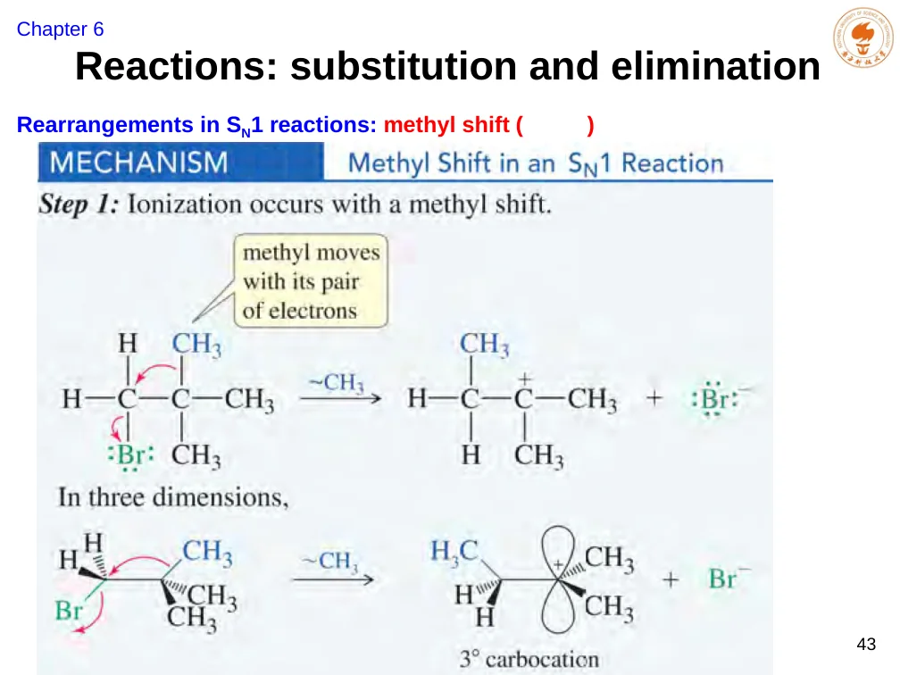
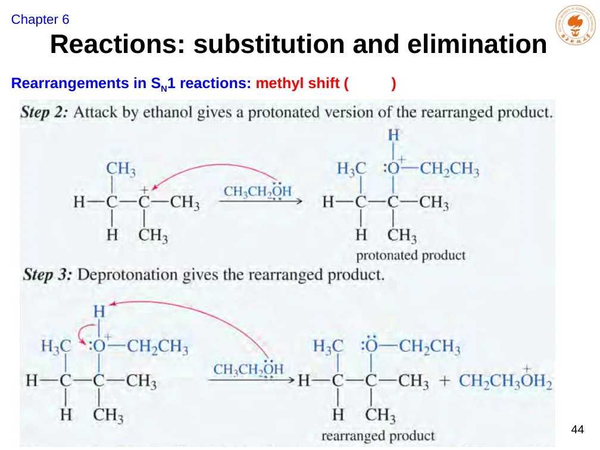
重排与捕获是竞争过程：可形成正离子不等于必定重排；无更有利结构或捕获很快时可直接生成未重排产物。普通一步SN2不经过这一类游离碳正离子，因而不能在同一协同步骤中再安排课件式的先成正离子、再迁移。
十、做题顺序与SN1/SN2比较
| 判断层次 | 先问什么 | 常见陷阱 |
|---|---|---|
| 结构 | X连sp³、烯丙位、苄位还是sp²？ | 把PhCH₂X当作PhX |
| 底物 | 背面位阻如何？正离子能否稳定？ | 新戊基是伯碳却很受阻 |
| 试剂 | 亲核性、碱性、位阻与溶剂是否相容？ | 强碱环境中的叔卤不能自动判SN1，消除可能占优 |
| 介质 | 电离能力、氢键溶剂化与底物溶解性如何？ | 改变溶剂比例时误当仅改变亲核体浓度 |
| 证据 | 速率级数、几何翻转、消旋程度、重排是否一致？ | 单条证据被当作绝对证明 |
| 产物 | 重新命名和排CIP；是否有多个位置或路径？ | 构型翻转直接等同R↔S |
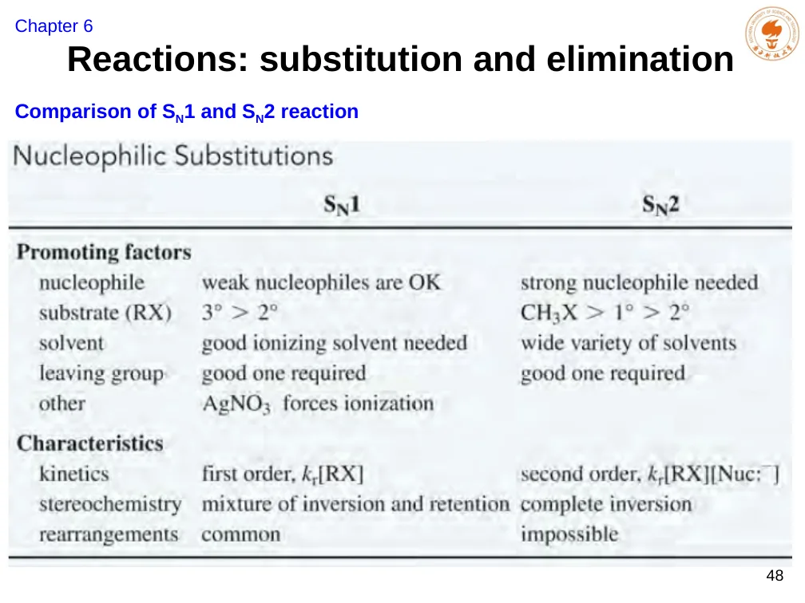
这张表用于识别典型路径，不是只看一个词就判题。仲卤底物尤其要综合亲核体、溶剂与温度；叔卤“不能普通SN2”仅排除该路径，不能无条件推出产物必是取代物。课件第45页的“叔卤取代经SN1”应保留“在讨论取代路径时”的限定。
十一、作业例题：把结构与定量连起来
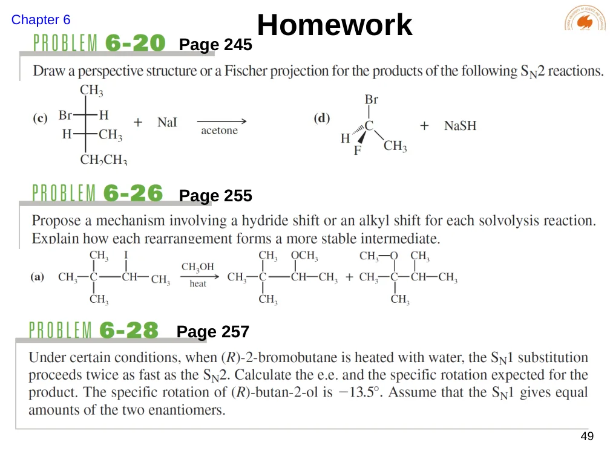
6-20：SN2产物的Fischer或透视式
(c) 反应中心为Fischer投影中上面的连Br碳。I⁻取代Br并使该中心翻转；若保持上下碳链固定，产物将上中心的横向Br/H位置改为H/I。下面的立体中心不参与成断键，应保留几何关系，再检查新CIP。不能把整个投影随意旋转90°来“换位置”。
(d) HS⁻在连Br碳背面进攻，Br被SH替换；产物连接为CH₃–CH(F)–SH。题目指定SN2，因此画出相对原Br位置的几何翻转，不把原楔线机械保留。命名与R/S判定应在画对三维关系之后完成。
6-26(a)：甲醇解与甲基迁移
先让C–I异裂，在原连I碳形成仲正离子。该碳一侧邻接C(CH₃)₃，季碳没有氢可迁移；从季碳向正电中心发生1,2-甲基迁移，正电位置转移到原季碳，形成叔正离子。甲醇捕获后先有氧鎓离子，再去质子化。直接捕获初始正离子给未重排醚；迁移后捕获给重排醚，二者不能混写成同一个中间体的共振式。
6-28：并行SN1/SN2、ee与比旋光度
题设(R)-2-溴丁烷水解，SN1速率是SN2的2倍，并额外假设SN1生成等量两对映体。把产物量看作3份：SN1的2份分为1份R醇、1份S醇；SN2的1份经翻转成为S醇。因此R:S=1:2，S为主要体。
题给纯(R)-2-丁醇比旋光度为−13.5，则同条件纯S为+13.5。在只含这对产物且线性加和时：
正号来自S为主要体以及题给的实测符号，不能从“S”字母本身猜旋光方向。33.3%是ee而非S含量；S含量是66.7%。若取消“SN1等概率”假设，仅给两机理速率比不足以唯一确定ee。
十二、拓展：用并行速率分解路径贡献
若同一底物同时有电离路径与SN2路径，假设两者独立、浓度保持可比且没有显著消除，在固定温度、介质下可写：
以[Nu]为横轴、表观一级常数kobs为纵轴，简单模型的截距为k₁、斜率为k₂。若SN1完全消旋、SN2只给翻转对映体且无后续外消旋化，主要对映体的ee近似等于SN2产物分数：
这一步把动力学连到立体化学，但不是测出ee就能无条件反推出机理比例：离子对使SN1不完全消旋、其他手性中心造成非对映选择性、产物继续外消旋化，或不同路径生成不同产物，都会破坏简化关系。它是带条件的推理工具。
十三、复习与第11课测验
复习时依次完成：从三条底物结构辨别苄基、烯丙基与芳基；解释新戊基的伯碳反应慢；逐步写出SN1电荷；从速率实验识别简单模型；分别判断几何翻转、R/S和旋光符号；在重排题中标出迁移键、新正电中心与捕获步骤。
平面正离子给出两面受攻的可能，离子对和溶剂笼可使两面不等价。50:50是额外理想化条件。
重排支持存在足够寿命的正离子型过程，但具体反应仍要综合条件和证据。对本课的普通SN2而言，它排除的是先形成游离正离子再迁移的步骤。
第11课测验：22题，32分 → 返回上一课：卤代烷与SN2
来源：本次49页课件；新增计算与解释按正文限定的模型推导。PPT第49页的教材页码为245、255、257，不据此推断用户其他教材版本的对应页。